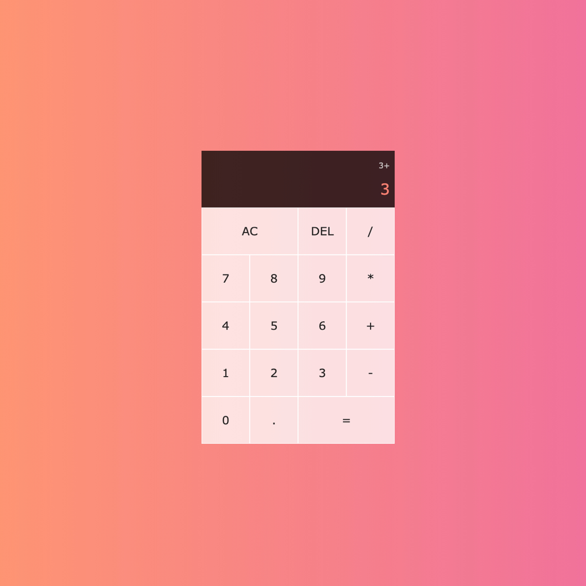
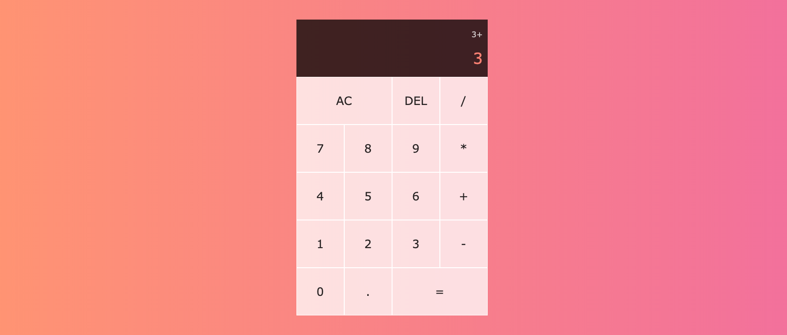

JS Calculator
This project is built entirely with pure vanilla JavaScript, styled with CSS grid and hosted using gitHub pages.
I was excited to code up a calculator. I mean it's easy! how hard can it be to make a calculator?! I was soon to find out.
I was definitely fooled by how complex a "simple" calculator can be. Specially starting to code. No frameworks were chosen for this project. The idea is to continue to work on improving my JavaScript and CSS skills. That's exactly what this project delivered on! This project taught me how to approach and think aobut problems like a programmer and how to find and implement creative solutions.
Visit Website